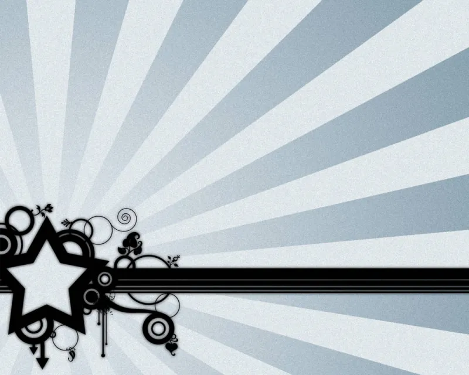
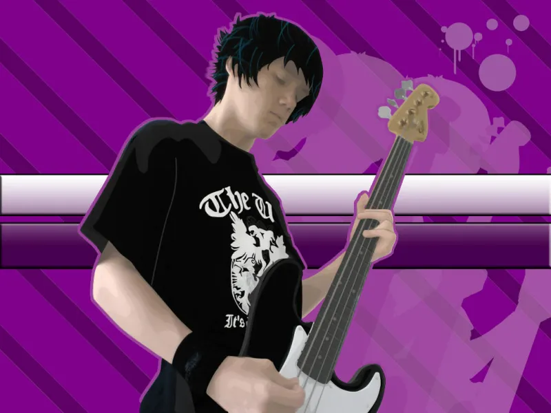
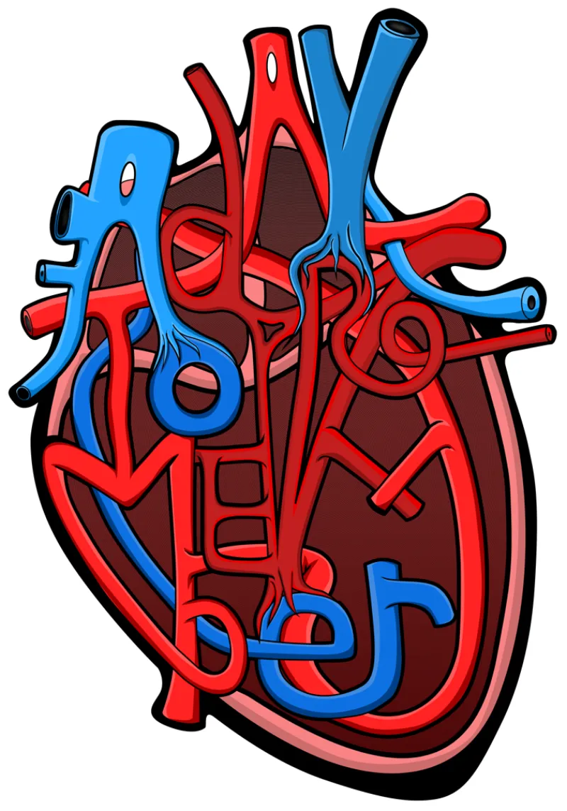
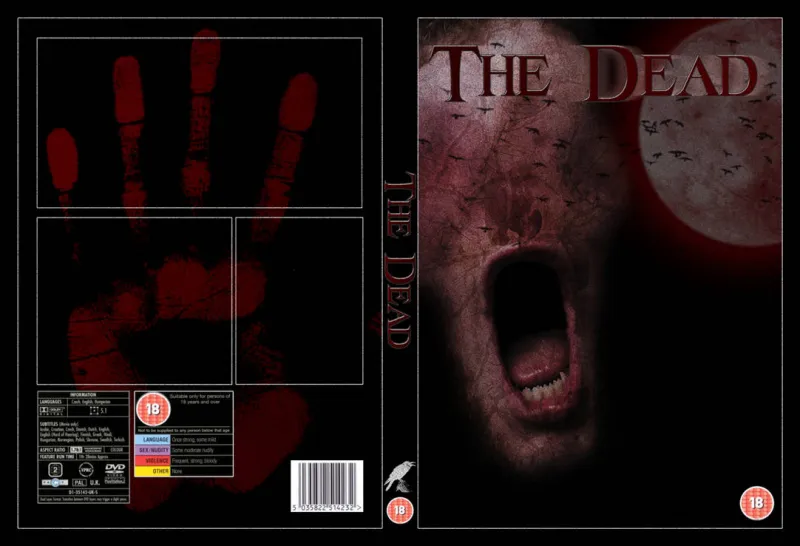
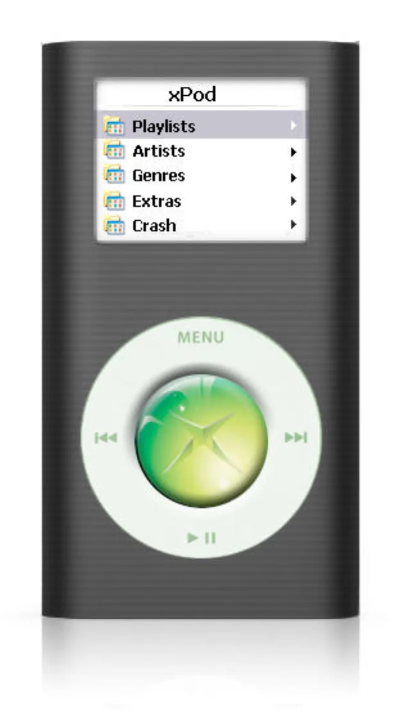
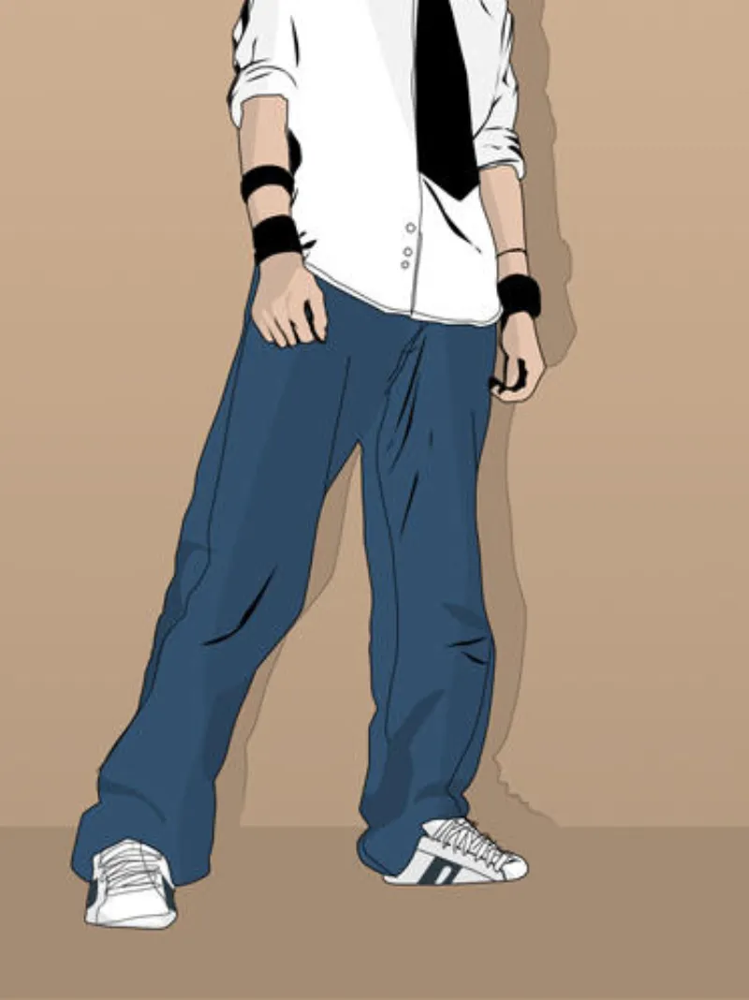
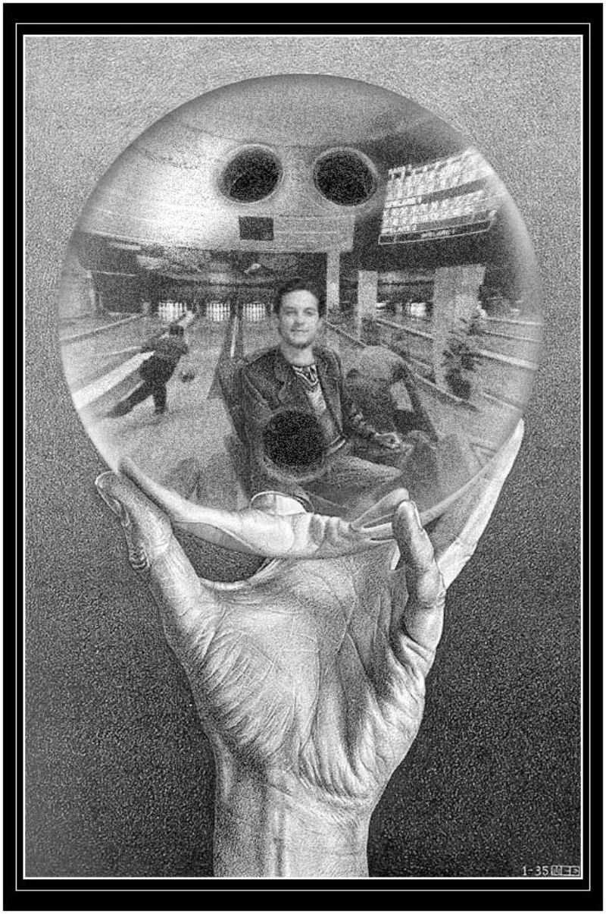
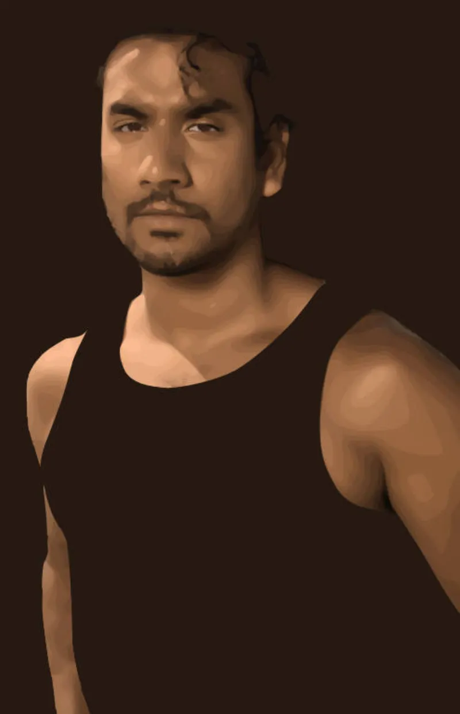
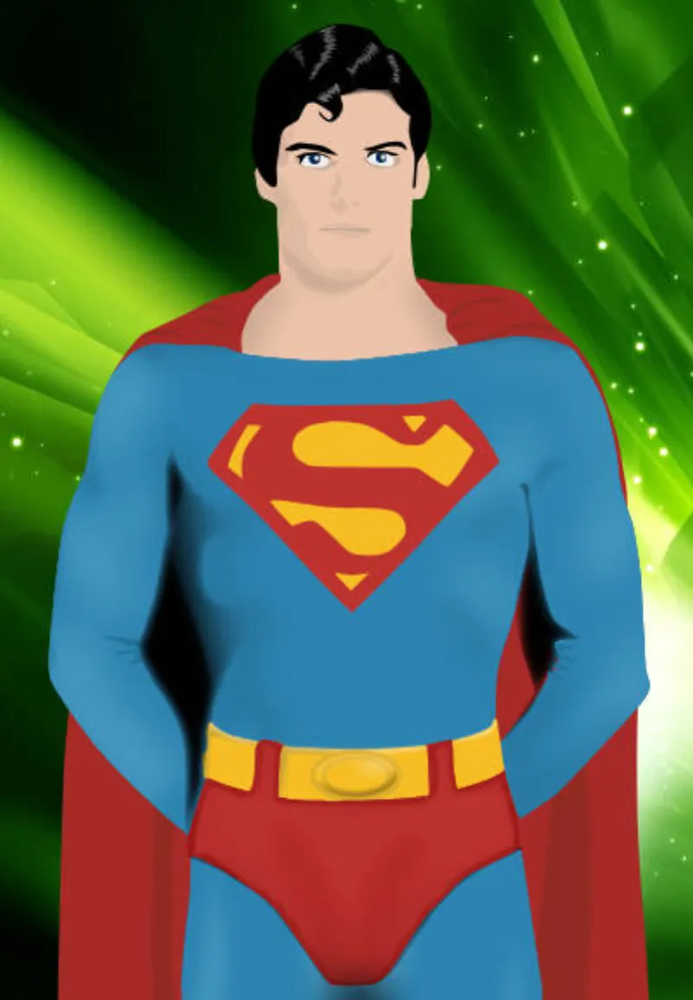
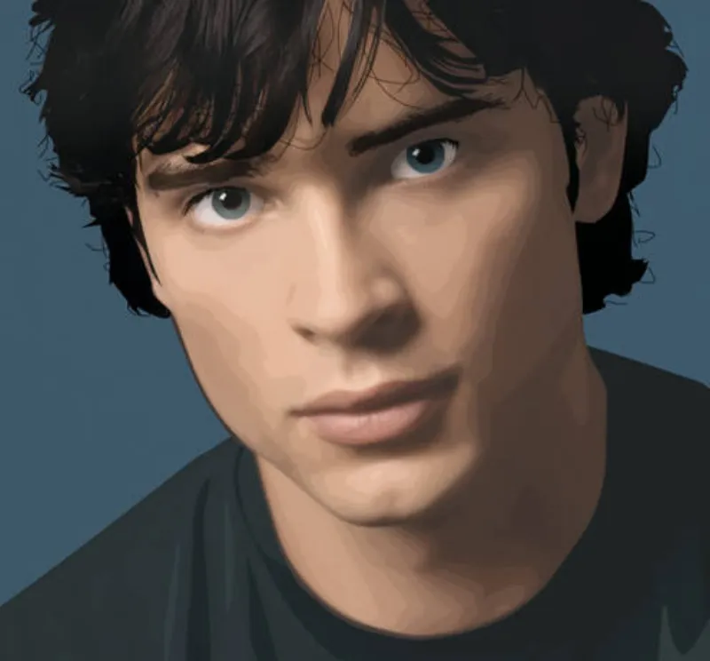

Hey i'm Edward. Look I know this isn't the normal way to go about a portfolio website. I did make a more corpo, professional-aesthetic website that followed all the best practices: Demonstrate value above the fold, talk about the impact you had on the places you worked and make sure you can tie it to metrics. "That's what recruiters are looking for" after all - how you add value to the places you work. And yeah i can do that, you can read those case studies here if you like. They're true, I can move the needles that the places I work for need me to, and I will be able to do that for your business or your clients' business.
It's just that for my website, and my portfolio, I actually don't want it to be all about you and meeting your needs - I want it to be about me.
I know that's counter intuitive - you're the person I am supposed to be impressing or convincing to hire me.
But AI exists now. It can spin up a working portfolio website with generated copy and some cool delightful widgets in just a few minutes - so following that path just feels less… special, or personal. You're not hiring my portfolio website, or the tools I use, my research skills, soft skills, leadership and boundary pushing, you're hiring me.
I don't believe that with the way design and development is changing in the age of AI that being able to design experiences and making it delightful and have features increasing retention is as important as it was. I think more and more as AI can do more things it's the people behind the tools that are most important.
So that's why you're getting something to read about me, and not so much about the tools and the metrics. I can use the tools, and move the metrics, I wouldn't have been employed long term at the places I have without being able to do those things. What I actually bring to the table is a unique, odd, innovative way of thinking, a willingness to learn, grow and the ability to be wrong sometimes.
1995–2000
My Dad brought home a Siemens Nixdorf PC he got on sale from Tesco (I'm from England by the way) when I would have been 9 or 10 years old. The kind of PC where the screen itself was 2 feet deep and the tower was taller than I was. Unsupervised and under 10 with access to the internet I got lost in it. I customized the Windows 95 system on that computer to within an inch of its life. Every icon was either Simpsons or South Park themed, clicking on anything triggered a sound byte and the wallpaper was a constant rotation of things i'd found on ask jeeves or alta vista. A neighbour's teenage son was visiting one day and he brought floppy discs and installed Doom and Duke Nukem 3D which opened my eyes to finding even more things to install on the machine. Before long my newly installed Winamp was subject to the same extreme level of customisation as the rest of the computer, and geocities was my next target. I made fan websites for everything, south park gifs, simpsons gifs - mostly gifs I had watched load frame by frame and saved on to my computer and I was now stealing and hosting as my own. I was like a crow with a shiny object, if you have a gif of one of my special interests, i'm gunna take that and put it in my nest. If you think about it, I was web designing on the early web when jakob's law didn't exist and the internet wasn't homogenous and owned by a handful of people. That's not to say the websites were good, absolutely not, but they were mine and I liked it.
The real lightbulb moment was a year or two later when I got a demo of Corel Draw. I had seen people making photoshops on the internet and in particular a friend of mine, Sam, had a poster for Star Wars the phantom menace in his room - but his parents had paid someone to photoshop Sam's face on the poster so he was in the star wars poster, and to my pre-teen eyes it was flawless and I wanted that. I had to know how it was done, If someone else could do that, I could do that. So that's where I started. At the time Chicken Run had come out and I was obsessed as an 11 year old so my first photoshop was, of course, to put myself in chicken run. I used my 320 × 240px webcam and took grainy, poorly lit photos of my face and got to work. Mum was on the phone so I was forced offline and on to Corel Draw. I took a photo I had downloaded of Rocky Rhodes, the main rooster from Chicken Run and I chopped it up, put his eyes and mouth on my face and printed it out - and that was the origin of my graphic design skill. From there I went on to make more impossible things. My brother as a birthday present had got a subscription to Cinefex, a magazine that covered visual effects in films. From flicking through some of those I unlocked new, incredibly advanced techniques. I was now in the world of layers and masking. I went back to the webcam and inspired by David Blaine: Street Magic I was on a quest to have my own levitation moment - at least until I could find out how David Blaine had actually levitated for real. The magic shop VHS I had begged my Mum to buy me for Christmas that taught levitation only covered Balducci levitation, so I was at a dead end there - until I was older and learnt about the powers of video editing, and wires.
I took a grainy low res photo of me cross-legged on a chair, then another photo of just the background. A chip chop later and I had a realistic photo of me levitating in my parent's office room. My MSN messenger friends would surely be blown away xX_0o_pRiNcEsS_xx_cHaRlOtTe_o0_Xx would be my girlfriend. I always had the latest version of MSN messenger, even downloading Alpha and Beta releases when they came out. It wasn't until some time later when visiting friends' houses did I learn that most other kids weren't on the pre-release version of MSN and as a result did not have profile pictures and couldn't see mine.
In the following years I would pirate many things. Music, movies, software, anything I could get my hands on. I was downloading movies in cam-quality at kilobytes a second and burning them to DVD-RWs to hand out to friends at school. I had pirated movies, pirated Nero burning rom, and I was designing my own DVD title screens. They were hideous, the movie quality was abysmal and I loved it. I would use coral draw to make my own versions of dvd jewel case if I couldn't find one online. I would even print out my own CD covers and stick them to the discs until their terrible adhesion would lead them to get shredded and jam the disc drive.
At this time, any birthday money or pocket money I had was being secretly hoarded, saved and I would go to the bank unsupervised with my bank book and get cheques written to pay for things I was bidding on on eBay. At the time eBay wasn't as sophisticated as it was today. I had found sniping software online and had automated my ebay set up so that my two pound max bid would be placed in the final seconds of an auction. Before long I had a semi regular stream of under a pound goods turning up at home. I could now print my own cd stickers and have them stick, my jewel cases were increasingly professional looking forgeries, at least to my 12 year old eyes.
2000–2005
I continued to learn and spent a lot of time in Photoshop in my early teens. I had my pirated adobe suite, my pirated music and pirated movies and hadn't yet lost years of my life to World of Warcraft. By the time I was 14 we were heading in to peak early 2000s internet era and MySpace was here. I finally had a way to show off my skills, regardless of if people were in the beta or alpha of msn or not. I stumbled my way through html and css using whatever I could find and modify to get my page to be as k00l as possible. My top 8 was carefully curated, my crush wasn't in pole position but was high enough for it to be a neg - a way of thinking I no longer believe in but to leave it out would be inauthentic. I had made gifs of everything. My favourite tv shows? Well that's a gif of a tv that flashes every second two noise, then to another tv show, back to noise, and another tv show. A technique called skeuomorphism I would learn many years later, but it made sense to a 2000s teen as a cool way to display the information.
By 15 I was on DeviantArt and I had a place to share my work









